Win7 IIS 安装 PHP + MYSQL + PHPMYADMIN 方法
1、IIS的安装
在控制面板里面打开“功能和程序”，在出来的对话框上选择左边的“打开和关闭Windows功能”。
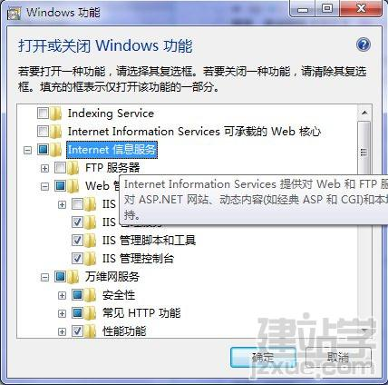
根据需要选择适当的功能选项，如果你实在搞不懂的话，可以全部都勾上。我这里主要是用Asp和Php建立本地的站点测试，在上传到空间上之前先在本地测试好后直接上传到网络空间就可以了。我这里具体的选择项如下：
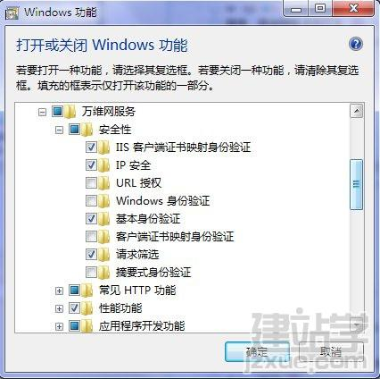
安全性根据个人需要勾选吧，由于是本地测试服务器，一般对安全性要求不高，选择最基本的就可以了。
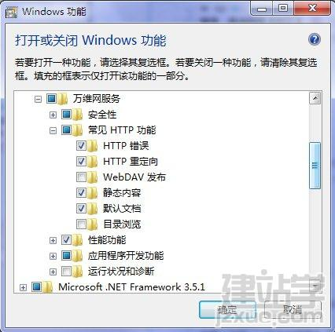
常见功能，如果使用Visual Stduio开发的话，可以勾选WebDAV，不过一般都没有太大的作用，我们都是手工上传到网络空间的，像我这里就选择基本项，前面两项很重要，可以查看到站点的错误描述页面。
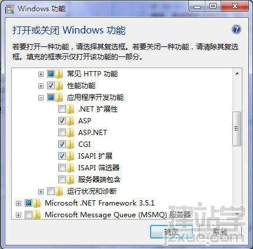
应用程序开发功能是关键，如果要搭建PHP环境的话，一定要选择上CGI，ISAPI筛选项可以不用选。
选择完成后就开始安装，完成后就可以开始配置你的IIS了。
2、IIS的配置
IIS的配置相对简单，基本上不用做过多的设置，绑定一下IP地址（本机的话可以不用绑定），设置端口（默认是80端口），你可以对ASP和PHP服务设置不同的默认端口。
在控制面板里面打开“管理工具”，打开“Internet 信息服务(IIS)管理器”:
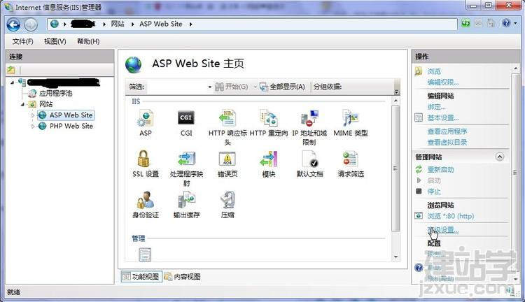
在高级设置里面修改“应用程序池”为“DefaultAppPool”，你也可以更改站点文件目录。
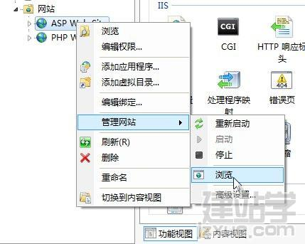
直接浏览你的站点，也可以在浏览器里面输入：http://localhost或者http://127.0.0.1，浏览你的站点了。
3、PHP的安装与配置
PHP你可以下载安装版或者压缩版，对于压缩版直接加压出来即可，按照下面的流程的修改步骤配置。
下载PHP的最新版本：php-5.4.9-Win32-VC9-x86
PHP IIS 版(VC9)有两个版本，None-Thread Safe与Thread Safe两种版本的可供选择，先从字面意思上理解，None-Thread Safe就是非线程安全，在执行时不进行线程（thread）安全检查；Thread Safe就是线程安全，执行时会进行线程（thread）安全检查，以防止有新要求就启动新线程的 CGI 执行方式耗尽系统资源。再来看PHP的两种执行方式：ISAPI和FastCGI。FastCGI执行方式是以单一线程来执行操作，所以不需要进行线程的安全检查，除去线程安全检查的防护反而可以提高执行效率，所以，如果是以 FastCGI（无论搭配 IIS 6 或 IIS 7）执行 PHP ，都建议下载、执行 non-thread safe 的 PHP （PHP 的二進位檔有兩種包裝方式：msi 、zip ，請下載 zip 套件）。而线程安全检查正是为ISAPI方式的PHP准备的，因为有许多php模块都不是线程安全的，所以需要使用Thread Safe的PHP。
新建站点，随便写个名字即可，然后就开始设置。
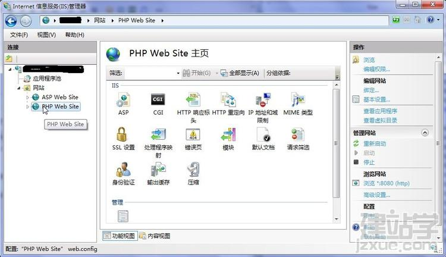
配置应用程序池，新建一个应用程序池：
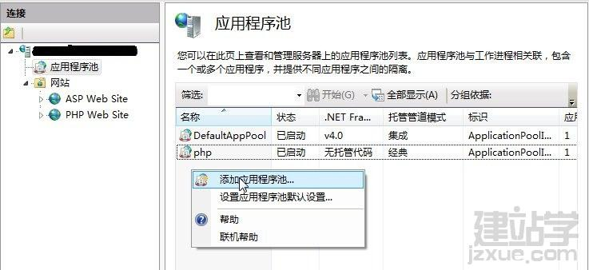
名称填写php，“.NET Framework版本”选择“无托管代码”，下面的“托管模式”选择“经典”，勾选“立即启动应用程序池”，见下图。
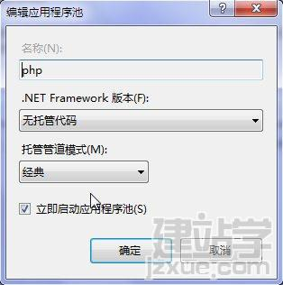
在“处理程序映射”中添加映射模块，见下图。
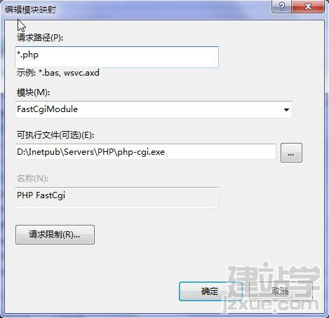
可执行文件的路径就是刚刚压缩出来的PHP软件所在的路径。在高级设置中配置应用程序池，和ASP的配置类似，80端口已经被ASP站点占用，PHP的站点要修改端口，可以修改为8080端口，只要没有被其他应用程序占用的端口都是可以的，见下图。
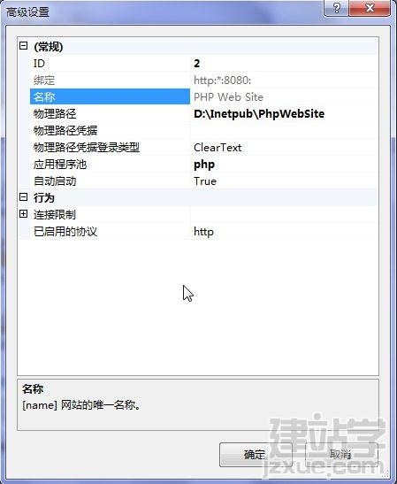
修改默认文档，新建一个默认文档index.php，见下图。
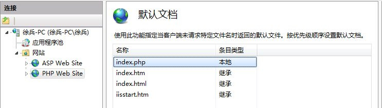
PHP在IIS上面的配置就算完成了。
PHP配置如下，在PHP解压缩出来的目录里面找到php.ini-development文件，将这个文件复制一份，修改文件名为php.ini，然后用记事本或者文本编辑工具修改php.ini，在PHP程序目录创建Sesion的临时目录tmp，并设置可读写权限，因为下面的配置中要用到。
红色的地方都是需要修改的，将左边的修改为右边的即可。
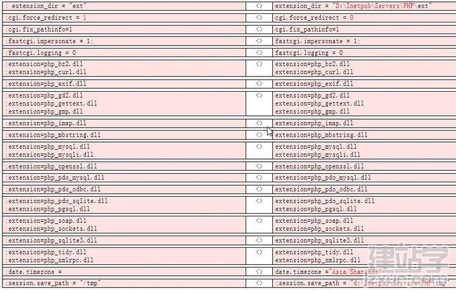
现在可以在PHP站点目录下新建一个文件，index.php，填写如下代码后保存，然后在浏览器中输入：http://localhost:8080或者http://127.0.0.1:8080，就可以看到php的详细配置信息了，这时候说明你的php基本上已经配置完成了。
如果看不到显示的话，把IIS重启一下就可以了，直接在开始菜单的运行里面输入“iisrest”即可重启IIS。
4、PhpMyAdmin的配置
PhpMyAdmin是用来在线管理MySQL数据库的，可以很方便的操作MySQL数据库，关于MySQL数据库的安装可以参见我的日志。
PhpMyAdmin要放在PHP站点的目录下面。
复制PhpMyAdmin目录下面的config.sample.inc.php文件为config.inc.php，然后修改如下内容，将左边的内容修改为右边的内容，controlpass是安装MySQL的时修改的密码：
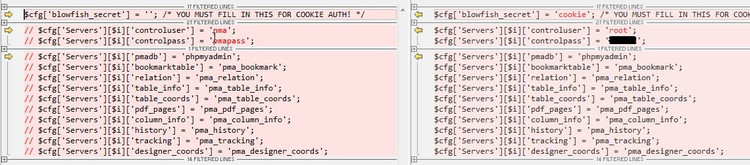
修改PhpMyAdmin\libraries\config.default.php文件，同样是将左边的内容修改为邮编的内容：
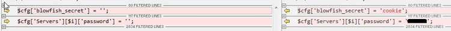
到此PhpMyAdmin就算是配置好了，直接在浏览器里面输入：http://localhost:8080/PhpMyAdmin可以打开MySQL的管理登录页面。输入密码后可以看到MySQL管理页面，现在你就可以在线管理数据库了。
====错误解决方法=====
错误警告:Warning: date() [function.date]: It is not safe to rely on the system’s timezone settings. You are *required* to use the date.timezone setting or the date_default_timezone_set() function. In case you used any of those methods and you are still getting this warning, you most likely misspelled the timezone identifier. We selected ‘UTC’ for ‘8.0/no DST’ instead in (文件路径) on line (行号).
出入格林威治标准时间和北京时间大概差8个小时左右，我们可以按照下面的方法解决
在php.ini中设置date.timezone的值为PRC，设置好以后的为date.timezone=PRC，同时取消这一行代码的注释，即去掉前面的分号就可以了。